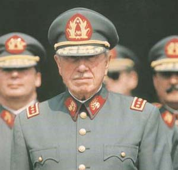

Augusto Pinochet Ugarte (1915- 2006)
Militar y estadista chileno.
En agosto de 1973, Pinochet se convirtió en comandante en jefe de las Fuerzas Armadas chilenas. Al declarar Salvador Allende zona militar a Santiago de Chile en respuesta a las huelgas y disturbios, el general Pinochet anunció que si persistían éstos, sacaría el ejército a la calle. El 11 de septiembre de ese mismo año, Pinochet y otros mandos militares se levantaron contra el Gobierno de Allende "para liberar al país del yugo marxista". Al resistirse Allende, fue atacado el Palacio de la Moneda, residencia oficial, donde murió el Presidente.
El 27 de junio de 1974 asumió el cargo de Jefe Supremo de la Nación y el 17 de diciembre de dicho año fue nombrado Presidente de la República. Desde que tomó el poder, estuvo prácticamente aislado, con escasos contactos con el exterior.
El 11 de marzo de 1981 inició una segunda etapa: asumió la Presidencia de la República por un periodo de ocho años tras jurar y acatar la nueva Constitución. En agosto de 1988 fue designado por la Junta Militar candidato único a la Presidencia para el plebiscito por el que se proponía el mantenimiento de Pinochet en el poder hasta 1998. El resultado del plebiscito fue un 55,2 por ciento en contra de Pinochet, frente a un 42 por ciento a favor. Poco después, el jefe de Estado chileno anunció que dejaría el poder en 1990, aunque permanecería como jefe del Ejército.
Tras las elecciones presidenciales de diciembre de 1989, en las que resultó elegido Patricio Aylwin, Pinochet abandonó la presidencia.